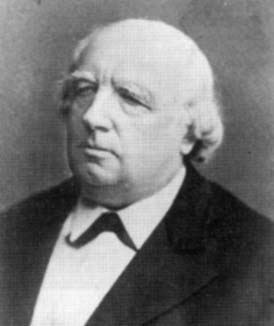

Intuitivement la notion de fonction 'continue' correspond aux fonctions dont la représentation est une courbe 'continue' au sens usuel, c'est à dire pouvant être tracée d'un seul trait sans lever le crayon. Représentation graphique d'une fonction continue, cliquez sur le bouton pour voir l'animation.
The concept
Intuitively, the notion of 'continuous' function corresponds to functions the representation of which is a 'continuous' curve in the usual sense, i.e. which can be drawn in a single line without lifting the pencil . Graphic representation of a continuous function, click on the button to see the animation.
Une telle représentation ne présente donc pas de 'décrochement' ou 'saut', c'est à dire qu'à des valeurs proches de la variable correspondent des valeurs proches pour les images. Voici maintenant la représentation graphique d'une fonction présentant une discontinuité. Cliquez sur le bouton.
Such a representation therefore does not present any 'break' or 'jump', i.e. close values of the variable give close images. Here is now the graphical representation of a function with a discontinuity. Click on the button to watch or watch again.
Comme la plupart des fonctions sont données par des formules mettant en jeu les 4 opérations, ainsi que l'exponentiation et des fonctions de base comme les fonctions trigonométriques, et que cette notion présente une bonne stabilité vis à vis des opérations algébriques, la plupart des fonctions ainsi construites seront continues. En réalité, pour un domaine donné D, l'ensemble des fonctions continues sur D constitue une infime minorité de l'ensemble ℝD de toutes les fonctions numériques définies sur D. Nous sommes donc devant une situation paradoxale comparable à celle que nous avons déjà rencontrée avec les nombres réels. En théorie l'immense majorité des nombres sont , en pratique tous ceux qu'on manipule sont algébriques, voir même rationnels. De la même façon qu'on montre très peu de représentants d'une catégorie d'individus très majoritaire (les nombres π et e) on construira de rares exemples de fonctions non continues que l'on retrouvera toujours d'un exposé à l'autre, donnant ainsi l'impression que les fonctions discontinues sont rares et difficiles à montrer.
Hommage à ...
As most functions are given by formulas bringing into play the 4 operations, as well as exponentiation and basic functions such as trigonometric functions, and as this notion presents good stability with respect to algebraic operations, most functions thus constructed will be continuous. In reality, for a given domain D, the set of continuous functions on D constitutes a tiny minority of the set ℝD of all numerical functions defined on D. We are therefore faced with a paradoxical situation comparable to the one we have already encountered with real numbers. In theory the vast majority of numbers are , in practice all those we manipulate are algebraic, or even rational. In the same way that we show very few representatives of a very vast category of individuals (the numbers π and e) we will construct rare examples of non-continuous functions that we will always find from an example to another, thus giving the impression that discontinuous functions are rare and difficult to show.
Tribute to...
Karl Weierstrass (1815-1897/DE)

qui, sur la lancée de Cauchy, a grandement contribué à clarifier le concept de fonction continue.
which, following on from Cauchy, greatly contributed to clarify the concept of continuous function.